Abrimos cada producto y te mostramos lo que hay adentro, ingrediente por ingrediente. Con los datos de la ficha técnica y lo que dice la ciencia, sin letra chica.
Cada sachet trae 11,4 g de colágeno Peptan® y, a su alrededor, antioxidantes, fibra y 18 vitaminas y minerales. La idea es simple: que un solo vaso al día haga el trabajo de varios frascos.
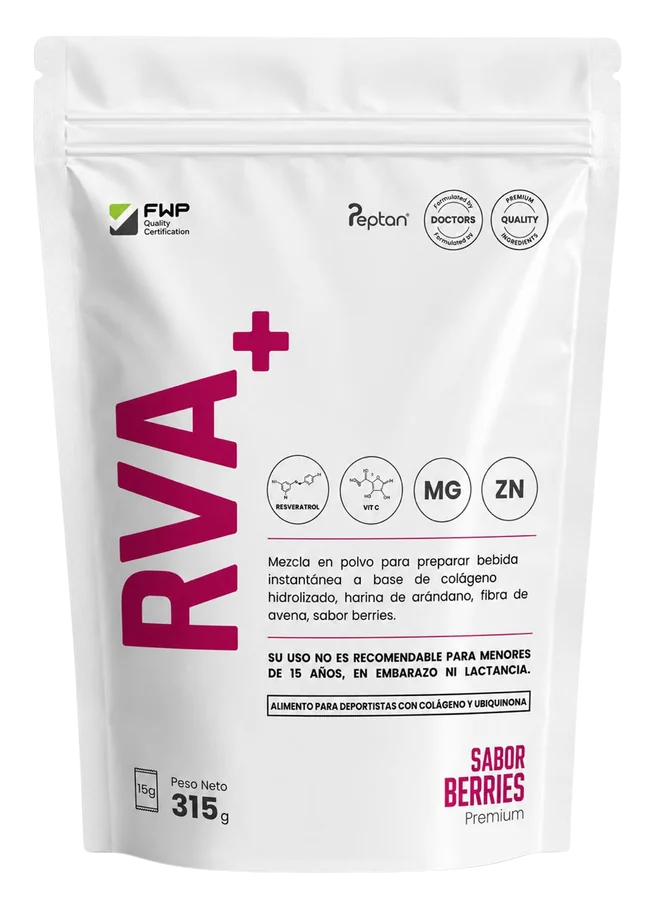
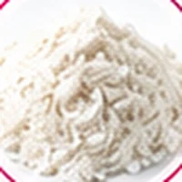
11,4 g Peptan®Colágeno hidrolizado de alta absorción
Vitamina CContribuye a la formación normal de colágeno
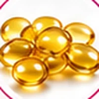
Coenzima Q1015 mg por sachet, energía celular
ResveratrolAntioxidante natural de la uva
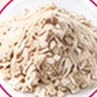
MagnesioFunción muscular y sistema nervioso
ZincPiel, cabello, uñas y defensas
Fibra de avenaSanacel Oat®, para tu digestión
InulinaPrebiótico que alimenta tu microbiota
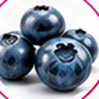
ArándanosAntioxidantes que cuidan tus células
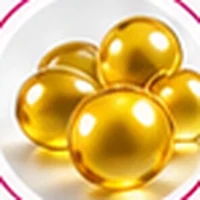
BiotinaCabello, piel y uñas
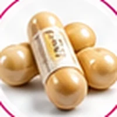
Vitaminas BEnergía y metabolismo del día a día
Vitamina D3Huesos y sistema inmune
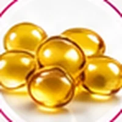
Vitamina EAntioxidante que cuida tu piel
¿Y qué dice la ciencia del colágeno?
Bastante, y es de lo más estudiado en suplementos. Una revisión que reunió 26 estudios con 1.721 personas encontró que el colágeno hidrolizado mejoró la hidratación y la elasticidad de la piel en comparación con placebo. Los mismos autores piden más estudios grandes para confirmarlo, así que lo tomamos como lo que es: un buen respaldo, no una promesa mágica.
"Recomiendo Renova por su alta concentración y fórmula avanzada con bio-péptidos y resveratrol."
Dr. Álvaro Melgar · Medicina antiaging
"Renova es una fórmula completa que integro en los tratamientos de mis pacientes por su rápida absorción y combinación con resveratrol."
Dra. Chiaretta Boza · Medicina antiaging
Los 18 nutrientes de cada sachet
Vitamina A101%
Vitamina C105%
Vitamina D3105%
Vitamina E111%
Vitamina K1103%
Vitamina B1100%
Vitamina B2106%
Vitamina B3102%
Vitamina B5106%
Vitamina B6109%
Vitamina B9105%
Vitamina B12105%
Biotina104%
Magnesio101%
Zinc107%
Hierro104%
Selenio101%
Yodo100%
Porcentaje de la dosis diaria recomendada (DDR) que aporta un sachet de 15 g, según la ficha técnica FWP. Sin azúcar: endulzado con estevia, sabor berries.
☀️ AM: en ayunas, antes del desayuno🌙 PM: 30 min después de la once o la cena💧 Agua fría o templada, nunca caliente☕ Aléjalo 30 min del café y los lácteosVer RENÖVA+ →
LIV · Ligereza que fluye
Tu digestión, más liviana
LIV junta fibras de frutas y plantas con tres probióticos identificados en su etiqueta. Un scoop te aporta 6 g de fibra, casi una cuarta parte de lo que necesitas en el día.
Manzana verdeLa base de la fórmula
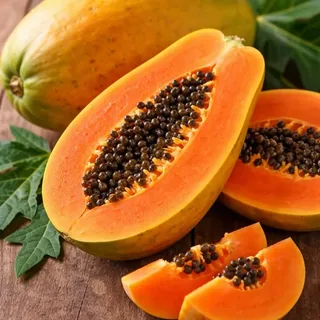
PapayaFruta tradicional para la digestión
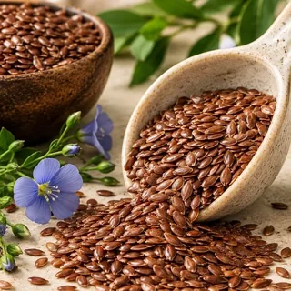
LinazaSemilla rica en fibra
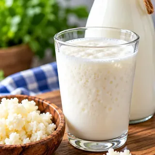
Probióticos3 cepas identificadas en la etiqueta
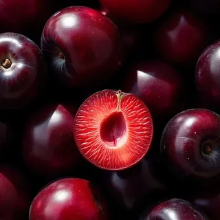
CiruelaClásica aliada del tránsito regular
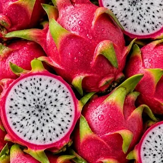
PitahayaFruta del cactus, rica en fibra
Fibra de bambúVolumen y saciedad
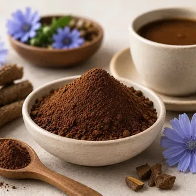
FOSPrebiótico: alimento de tus bacterias buenas
¿Para qué sirven los probióticos?
Son microorganismos vivos que, en la cantidad suficiente, aportan beneficios a la salud. Trabajan principalmente en tu intestino, donde pueden influir en la microbiota. Un detalle importante: cada cepa actúa distinto, por eso vale que LIV diga en su etiqueta exactamente cuáles trae y cuántas.
Un consejo práctico: si no estás acostumbrado a la fibra, parte con medio scoop la primera semana y toma harta agua durante el día.
Lo que trae cada scoop
Fibra dietética6 g · 22%
B. animalis lactis BLC11×10¹⁰ UFC
L. acidophilus LA32×10⁹ UFC
S. thermophilus1×10⁸ UFC
Calorías4 kcal
Azúcares0 g
Porción de 10 g, según la ficha técnica FWP. Contiene derivados lácteos (cultivos probióticos).
🥄 1 scoop (10 g) al día🥤 En 200 ml de agua🔄 Remueve unos segundos💧 Mantén buena hidrataciónVer LIV →
24BURN · Té limón
Un té que te activa en el día
Té verde con 95% de polifenoles, Panax Ginseng y L-Carnitina en un té sabor limón que puedes tomar frío o caliente. Es un aliado de tu rutina: funciona mejor junto a buena comida y movimiento.
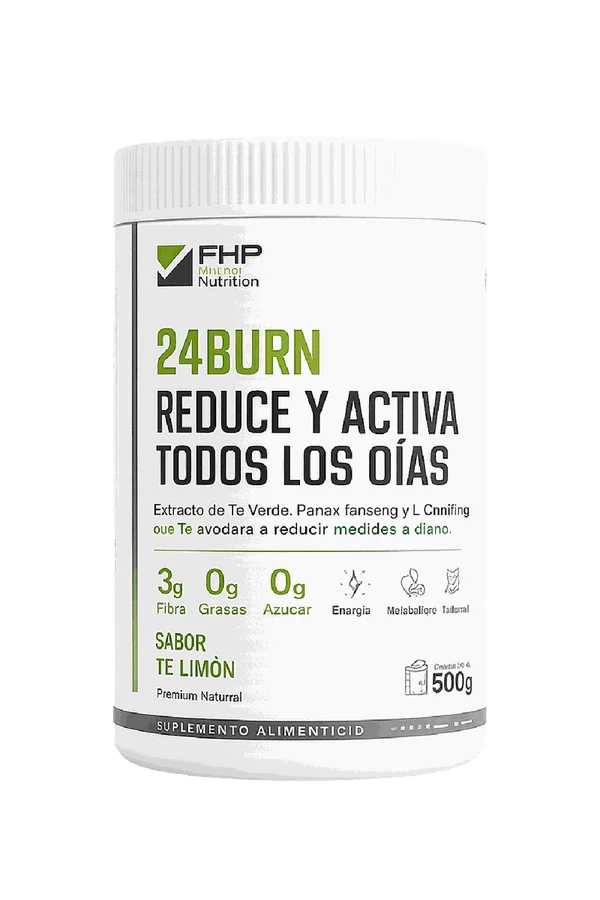
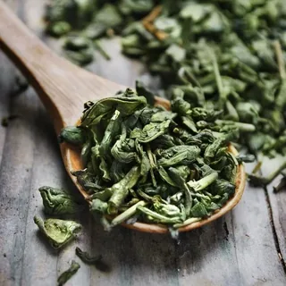
Té verde60 mg de extracto, 95% polifenoles
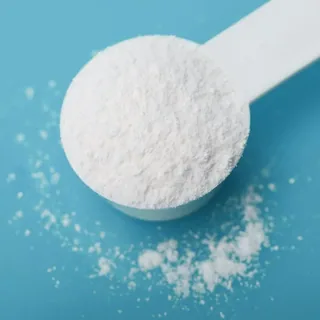
L-Carnitina150 mg por scoop
Panax Ginseng23 mg de extracto de raíz
GuaranáFuente natural de cafeína
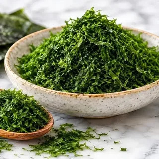
KelpAlga marina concentrada
Vitaminas A, B2 y B3B2 y B3 al 188% de la dosis diaria
Lo que dice la evidencia, sin exagerar
Las catequinas y la cafeína del té verde pueden tener un efecto modesto sobre el peso, que cambia según la persona. El ginseng se ha estudiado por su efecto sobre el cansancio, con resultados que no siempre coinciden, y la L-Carnitina tiene estudios mixtos en rendimiento físico. Por eso 24BURN suma a tu rutina, pero no la reemplaza.
Ojo: trae cafeína (té verde, guaraná y cafeína añadida). Tómalo de día y evítalo en la noche. Si tienes diabetes o tomas medicamentos, consulta a tu médico, porque el ginseng podría bajar el azúcar en sangre.
Lo que trae cada scoop
L-Carnitina150 mg
Extracto de té verde60 mg
Panax Ginseng23 mg
Vitamina B2188%
Vitamina B3188%
Vitamina A84%
Fibra dietética3,3 g
Azúcares0 g
Grasa0 g
Calorías6,9 kcal
Porción de 15 g, según la ficha técnica FWP. Endulzado con sucralosa.
🌤️ 1 scoop al día, de mañana o mediodía🥤 En 200 ml de agua, frío o caliente📦 33 porciones por envaseVer 24BURN →
24B+ · Reduce y activa
Frutas, verduras y tres tés en un sachet
Té verde, té negro y té rojo junto a limón, alcachofa, brócoli, espárrago y manzana, con Panax Ginseng y un mix de 13 vitaminas y minerales. Pensado para acompañarte en tus días activos y tus entrenamientos.
Té verdeUno de sus tres tés
Té negroAporta parte de su cafeína
Té rojoEl tercer té de la mezcla
Panax Ginseng36 mg por sachet
Citrato de magnesioMineral para tus músculos
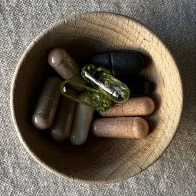
Mix vitamínicoVitaminas A, C, B y minerales
LimónBase de su sabor té limón
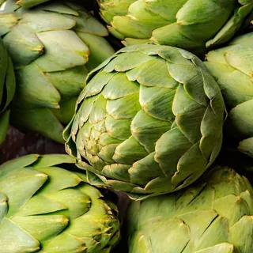
AlcachofaVerdura tradicional de la cocina saludable
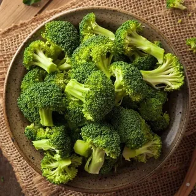
BrócoliVerde que suma a la fórmula
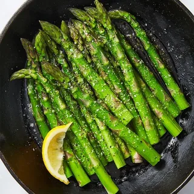
EspárragoOtro verde de la mezcla
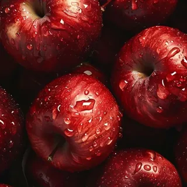
Manzana maduraFruta que completa la fórmula
Bueno saberlo
24B+ combina tres tés con frutas y verduras en polvo. Trae un poco de cafeína (4,5 mg por sachet, bastante menos que un café) y 36 mg de ginseng. El ginseng se ha estudiado por su efecto sobre el cansancio, con resultados que no siempre coinciden.
Si tienes diabetes o tomas medicamentos, consulta a tu médico antes de tomarlo.
Lo que trae cada sachet
Vitamina A106%
Vitamina C104%
Vitamina B1116%
Vitamina B2111%
Vitamina B3105%
Vitamina B5105%
Vitamina B6106%
Vitamina B9103%
Vitamina B12187%
Biotina104%
Hierro106%
Zinc102%
Yodo104%
Fibra dietética3 g
Sachet de 10 g, según la ficha técnica FWP. Endulzado con estevia. Cafeína: 4,5 mg por porción.
🌤️ 1 sachet al día🥤 En 200 ml de agua📦 28 sachets por cajaVer 24B+ →
E-BOOST · Sabor mandarina
Energía y enfoque para tu jornada
Aminoácidos BCAA, guaraná, té negro y yerba mate, más un mix de 16 vitaminas y minerales. Pensado para esos días largos en que necesitas la cabeza despierta.
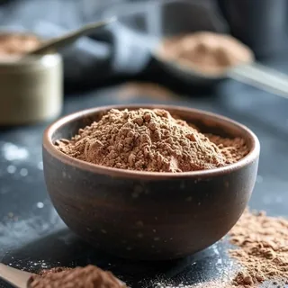
BCAALeucina 196 mg, isoleucina y valina 63,5 mg
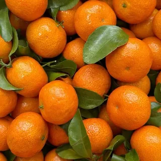
MandarinaSu sabor natural
GuaranáFuente natural de cafeína
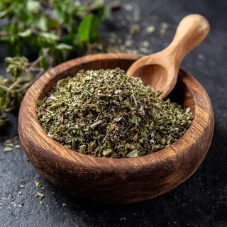
Yerba mateLa energía de siempre
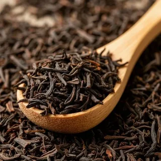
Té negroOtro aporte natural de energía
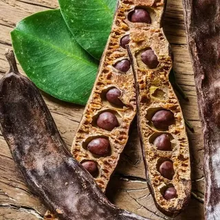
AlgarroboHarina de su vaina
Fibra de bambúFibra de la fórmula
Cómo sacarle provecho
Los BCAA (leucina, isoleucina y valina) son aminoácidos esenciales: tu cuerpo no los fabrica y los obtiene de las proteínas. E-BOOST los combina con guaraná, té negro y yerba mate, que aportan cafeína de forma natural.
Por eso el mejor momento es en la mañana o antes de tu jornada más exigente. En la noche puede quitarte el sueño, así que ahí mejor no.
Lo que trae cada sachet
Vitamina A108%
Vitamina C105%
Vitamina D3144%
Vitamina E115%
Vitamina B1117%
Vitamina B2112%
Vitamina B3107%
Vitamina B5107%
Vitamina B6108%
Vitamina B9105%
Vitamina B12190%
Biotina105%
Hierro108%
Zinc104%
Yodo105%
Magnesio89%
Sachet de 7 g, según la ficha técnica FWP. Sin azúcar: endulzado con estevia.
☀️ 1 sachet al día, de mañana🥤 En 200 ml de agua📦 28 sachets por cajaVer E-BOOST →
⚠️ Esta información es educativa y no reemplaza a tu médico. Los suplementos no son medicamentos y no reemplazan una alimentación balanceada. Son para mayores de 18 años. Si estás embarazada, en lactancia, tomas medicamentos o tienes alguna condición de salud, consulta a tu médico antes de tomarlos. Los resultados dependen de cada persona y de sus hábitos.